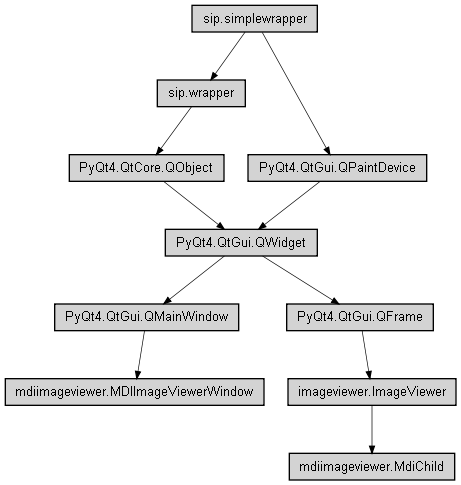

2 mdiimageviewer – Synchable image viewers using MDI style interface

MDI ImageViewer Window class
based on Trolltech MDI.py example.
-
mdiimageviewer.toBool(value)[source]
Module function to convert a value to bool.
| Parameters: |
- value – value to be converted
|
|---|
| Returns: | converted data
|
|---|
-
class mdiimageviewer.MdiChild(pixmap, filename, name)[source]
Bases: imageviewer.ImageViewer
ImageViewer that implements <Space> key pressed panning.
-
keyPressEvent(keyEvent)[source]
Overrides to enable panning while dragging.
-
keyReleaseEvent(keyEvent)[source]
Overrides to disable panning while dragging.
-
currentFile[source]
Get current filename.
-
class mdiimageviewer.MDIImageViewerWindow[source]
Bases: PyQt4.QtGui.QMainWindow
View multiple images with optionally synchonized zooming & panning.
-
createMappedAction(icon, text, parent, shortcut, methodName)[source]
Create action that is mapped via methodName to call.
-
createActions()[source]
Create actions used in menus.
Create menus.
Update menus.
-
updateRecentFileActions()[source]
Update recent file menu items.
Update the Window menu.
-
createStatusBar()[source]
Create status bar.
-
createStatusBarLabel(stretch=0, style=48)[source]
Create status bar label.
-
closeEvent(event)[source]
Handle close action.
-
mappedImageViewerAction(methodName)[source]
Perform action mapped to ImageViewer methodName.
-
toggleSynchPan()[source]
Toggle synch subwindow panning.
-
panChanged()[source]
Synchronize subwindow panning.
-
toggleSynchZoom()[source]
Toggle synch subwindow zoom.
-
zoomChanged()[source]
Synchronize subwindow zooming.
Activate current subwindow’s System Menu.
-
openRecentFile(filename)[source]
Open a recent file.
-
open()[source]
Handle the open action.
-
toggleScrollbars()[source]
Toggle subwindow scrollbars.
-
toggleStatusbar()[source]
Toggle subwindow scrollbars.
-
about()[source]
Display About dialog box.
-
subWindowActivated(window)[source]
Handle MDI subwindow activated signal.
-
setActiveSubWindow(window)[source]
Set active MDI subwindow.
-
loadFile(filename)[source]
Load filename into new MdiChild window.
-
updateStatusBar()[source]
Update status bar.
-
activeMdiChild()[source]
Return active ImageViewer.
-
createMdiChild(pixmap, filename)[source]
Create new ImageViewer for pixmap.
-
switchLayoutDirection()[source]
Switch MDI subwindow layout direction.
-
synchPan(fromViewer)[source]
Synch panning of all subwindowws to same as fromViewer.
-
synchZoom(fromViewer)[source]
Synch zoom of all subwindowws to same as fromViewer.
-
saveDialogState(dialog, groupName)[source]
Save dialog state, position & size.
-
restoreDialogState(dialog, groupName)[source]
Restore dialog state, position & size.
-
writeSettings()[source]
Write application settings.
-
readSettings()[source]
Read application settings.
-
updateRecentFileSettings(filename, delete=False)[source]
Update recent file list setting.
-
mdiimageviewer.main()[source]
Run MDI Image Viewer application.